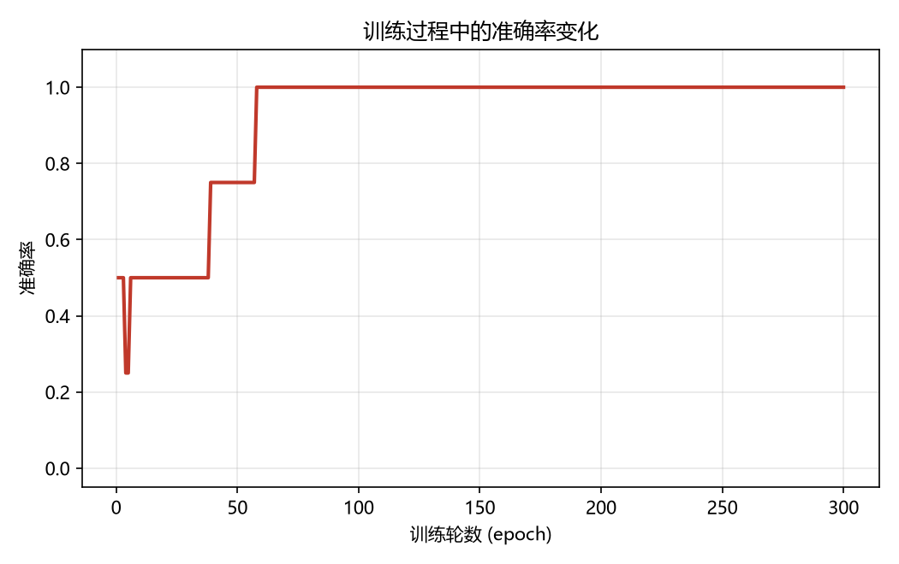

一、老师要求的拆解
先把老师 PPT（第 85、88 页）的作业要求整理成四条，做完每一条都能对上：
1
任务：用多层网络解决 XOR 问题。单个感知机解决不了，因为 XOR 的 4 个样本点在原空间里"同类点交错"，一条直线分不开。
2
结构：2 个输入 → 2 个 sigmoid 隐层单元（h₁、h₂）→ 1 个输出。关键在隐层：它把 (x₁,x₂) 映射到 (h₁,h₂) 特征空间后，XOR 变得线性可分。
3
训练配置：4 个 XOR 样本全部训练；二元交叉熵损失 + Adam 优化器，学习率 0.03，训练 300 轮；输出概率 > 0.5 判为类别 1。
4
原理四步：前向计算（输入沿连接权重层层计算得到预测）→ 计算损失（比较预测与正确标签，衡量当前模型的误差）→ 反向传播（用链式法则求各层权重对损失的影响）→ 参数更新（Adam 依据梯度调整权重，梯度本身不更新）。
二、为什么隐层能"救活"XOR？
原始输入空间里，y=0 的点在 (0,0) 和 (1,1)，y=1 的点在 (0,1) 和 (1,0) —— 在一张图上画出来是对角交错的，任何一条直线都不可能把两类分开，这就是"线性不可分"。
隐层做的事：让 h₁ 学成一个"近似 OR"（只要 x₁ 或 x₂ 有一个为 1 就激活），让 h₂ 学成一个"近似 AND"（只有 x₁ 且 x₂ 都为 1 才激活）。这样 4 个点被映射到新的 (h₁,h₂) 平面上：
| 输入 x₁x₂ | h₁（≈OR） | h₂（≈AND） | y | 新位置 |
|---|---|---|---|---|
| 00 | 0.06 | 0.00 | 0 | 左下角 |
| 01 | 0.96 | 0.07 | 1 | 右下角 |
| 10 | 0.98 | 0.07 | 1 | 右下角 |
| 11 | 1.00 | 0.93 | 0 | 右上角 |
映射之后 y=0 的两个点待在左下、右上，y=1 的两个点挤在右下 —— 一条直线就能分开了。这就是"隐藏层把输入组合成新特征，使不可线性分离变为可分"。
图 0 · 本次实现的 2-2-1 网络结构（与老师 PPT 一致）
三、两种实现
3.1 NumPy 手写版（真正"看见"反向传播）
为了把"参数是怎么学出来的"看清楚，我先用 NumPy 把前向传播、损失、反向传播、Adam 更新一步步手写出来。核心循环如下（完整代码见 mlp_xor_numpy.py）：
# ---- 前向传播：输入沿连接权重层层计算 ---- z1 = X @ W1 + b1 # 隐层加权输入 h = sigmoid(z1) # 隐层特征 (h1, h2) y_pred = sigmoid(h @ W2 + b2) # 输出概率 # ---- 计算损失：二元交叉熵，衡量预测与标签的差距 ---- loss = -mean(y*log(p) + (1-y)*log(1-p)) # ---- 反向传播：链式法则，求各层权重对损失的影响 ---- d_z2 = (y_pred - y) / N # BCE + sigmoid 的梯度 d_W2 = h.T @ d_z2 # 输出层权重梯度 d_z1 = (d_z2 @ W2.T) * h * (1-h) # sigmoid 导数 h(1-h) d_W1 = X.T @ d_z1 # 隐层权重梯度 # ---- Adam 更新：依据梯度调整权重（梯度本身不更新） ---- m = β₁·m + (1-β₁)·grad; v = β₂·v + (1-β₂)·grad² param -= lr · m̂ / (√v̂ + ε)
3.2 PyTorch 版（对照老师 PPT 第 88 页的写法）
再用老师课上演示的框架思路写了一遍，前向传播手工展开，训练交给自动微分（完整代码见 mlp_xor_pytorch.py）：
W1 = torch.nn.Parameter(torch.randn(2, 2))
b1 = torch.nn.Parameter(torch.tensor([-1., -1.])) # 隐层偏置初始 -1
W2 = torch.nn.Parameter(torch.randn(2, 1))
b2 = torch.nn.Parameter(torch.tensor([0.]))
optimizer = torch.optim.Adam([W1, b1, W2, b2], lr=0.03)
loss_fn = torch.nn.BCELoss() # 二元交叉熵
for epoch in range(1, 301):
optimizer.zero_grad()
h = torch.sigmoid(X @ W1 + b1) # 前向计算
y_pred = torch.sigmoid(h @ W2 + b2)
loss = loss_fn(y_pred, y) # 损失
loss.backward() # 反向传播求梯度
optimizer.step() # Adam 更新权重
2-2-1网络结构
BCE + Adam损失 / 优化器
lr = 0.03学习率
300 轮训练轮数
> 0.5 → 1分类阈值
两个版本的超参数完全一致（老师 PPT 的要求）。NumPy 版的 Adam、反向传播都是手写的，PyTorch 版则用
loss.backward() 自动求梯度 —— 跑出来的结果一致，互相验证。四、训练结果
训练 300 轮后，4 个样本全部判对：
| 输入 x₁x₂ | 真实 y | 预测概率 | 判类（>0.5 为 1） |
|---|---|---|---|
| 00 | 0 | 0.0431 | 0 ✓ |
| 01 | 1 | 0.9634 | 1 ✓ |
| 10 | 1 | 0.9673 | 1 ✓ |
| 11 | 0 | 0.0366 | 0 ✓ |
100%最终准确率
0.038最终损失
300训练轮数
五、可视化
5.1 损失下降曲线

5.2 原始空间 → 隐层特征空间：XOR 变得可分

5.3 输入平面上的决策边界

5.4 隐层特征空间随训练的演化

5.5 准确率曲线

六、踩坑记录
坑：随机初始化踩到局部最优，准确率卡在 75%。
第一轮实验用某个随机种子训练 300 轮后，(0,0)、(0,1)、(1,0) 全被判成 1，只有 (1,1) 判对 —— 准确率 75%，损失卡在 0.50 不再下降。这是 XOR 训练的经典现象：2-2-1 的小网络存在对称解 / 平坦区，某些初始值会让梯度走进"死角"出不来。
第一轮实验用某个随机种子训练 300 轮后，(0,0)、(0,1)、(1,0) 全被判成 1，只有 (1,1) 判对 —— 准确率 75%，损失卡在 0.50 不再下降。这是 XOR 训练的经典现象：2-2-1 的小网络存在对称解 / 平坦区，某些初始值会让梯度走进"死角"出不来。
解决办法很简单：换一个随机初始值（固定随机种子）再训练。换了初始值后同一套超参数直接收敛到 100%。由此也更直观地体会到老师 PPT 里"参数更新依赖梯度，而初始值决定从哪里出发"这句话 —— 误差曲面不是一碗平水，起点很重要。
收获：① 隐层的价值在于"造新特征"，把不可分变成可分；② 反向传播 = 链式法则逐层回传，BCE + sigmoid 的输出层梯度恰好是 (预测 − 真实)，形式非常干净；③ Adam 同时用一阶/二阶矩自适应调步长，比固定步长稳；④ 训练不收敛时先怀疑初始化，再怀疑超参数。